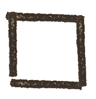

Wstęp
Fortuna abo szczęście po raz pierwszy została wydana w Krakowie w XVI wieku. Książka ta była zbiorem wróżb autorstwa Stanisława z Bochnie Gąsiorka. Oczekujący lekkiej i przyjemnej zabawy czytelnicy mogli dzięki niej poznać odpowiedź na nurtujące pytania o miłość, szczęście, dobre zamążpójście czy długość życia. Fortuna była dziełkiem niezwykle rozchwytywanym, a wiele z egzemplarzy szybko zaczytano.
Niniejsza aplikacja jest interpretacją wydania Fortuny (z lat ok. 1561–1577) w formie aplikacji mobilnej. Choć sam układ aplikacji nie może wiernie oddawać edycji papierowej, to jednak w dużym stopniu z niej czerpie. Wszystkie elementy wydania cyfrowego są albo oryginalnymi drzeworytami (m.in. tarcze i ilustracje przedstawiające postaci), albo zostały z nich wykonane. Mechanika zabawy właściwie nie została zmodyfikowana, gracz dalej wybiera jedno z 21 pytań, a następnie przechodzi przez kolejne etapy gry, aż do jednej z 444 przepowiedni. Tekst książki został zmodernizowany.

Nie pokazuj więcej wstępu
Przejdź do wróżb
 Kto chce wiedzieć, jeśli długo będzie żyw: mieć ná kole, w którym Gąsiorek.
Kto chce wiedzieć, jeśli długo będzie żyw: mieć ná kole, w którym Gąsiorek.